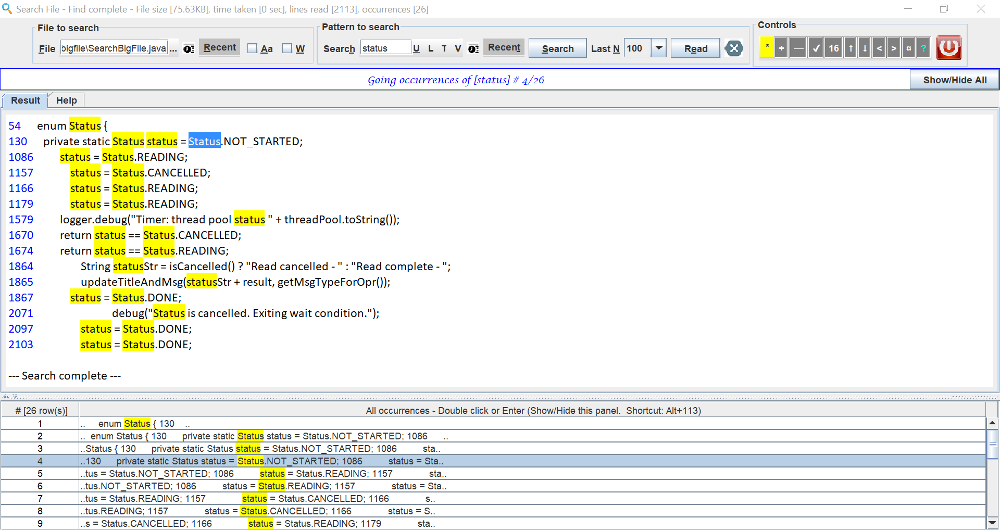

Note: For full feature working, please copy link of this file and paste in
browser
Welcome to Search Big File
Help Contents
Index
This application is Java8 based. UI is designed in Swing.
No third party library is used.
This program is developed to search big size files
like 400MB or even higher like 1GB.
Application image

More application images (opens in new tab)
- Complete UI can be driven by keyboard. That means all actions has short cuts.
- Every control has tooltip that describes more detail about it.
- Application has proper validations.
- Controls enable/disable as per actions.
- Waring/Error bar will change color as per user actions.
- "Show/Hide All" button on bar to show/hide all occurrences table
- All occurrences table show the number of occurrences and code excerpt
- In case of no occurrences, message is displayed
- Application stores values last entered by the user.
- Components and controls are categorised by title and a border.
- File can be choose from:
- Manually entered by user
- While manually typing file auto complete is available
- Select from "Ellipsis" (...) to browse folders
- Select from Recent Menu
- Select from Recent List Table (using )
- Checkbox "Aa" - This can be checked if search is case sensitive
- Checkbox "W" - This can be checked if search is meant to look for whole word only
- Search Pattern can be:
- Manually entered by user
- While manually typing auto complete is available
- Select from Recent Menu
- Select from Recent List Table (using )
- User can change case of search pattern text using below
- Button "U" - Convert text to upper case
- Button "L" - Convert text to lower case
- Button "T" - Convert text to title case
- Button "V" - Invert case of text
- Search Button will perform search for pattern in file. This action will display only matching lines in the
file.
- Label and drop down for "Last N" gives option to display last N lines (100 to 5000) from the file.
- Read button action display last N lines.
- Search and Read button action also highlights with yellow
background to search pattern that matches. More color can be chosen for selection background, selection text and
match. Sample colors will be shown in tooltip.
- Cancel button icon () to stop
operation while
Search/Read going on
- It will be disabled () when unavailable
- Toolbar is available with different actions
- * this action will set highlight color immediately
- Chosen color will be applied as background to the item
- Highlight color will be applied in Results tab and occurrences table
- New color will be stored as part of configuration and reapplied on restart
- Each color is displayed as background of menu item and each menu item has shortcuts.
For image see Introduction section
- + this action will increase font size by 1, maximum allowed size 28
- - this action will decrease font size by 1, minimum allowed size 8
- ✔ this action will reset font size to 12
- N Number indicating current font size of results area
- ↑ this action will take result scrollbar to top
- ↓ this action will take result scrollbar to bottom
- < this action will take to previous occurrence of search pattern
- > this action will take to next occurrence of search pattern
- ¤ this action will search new word from Search box in existing results tab contents
- like a find functionality.
- ? this action will show help. Color of this text changes every 10 sec to 8 different colors
- Exit button icon (
 ) will exit from
application
) will exit from
application
- Information bar that represent different actions.
- Font of this bar changes every 10 minutes.
- White background with blue color to show
information
- Orange background with black color to
show warning
- Shows warning if time in search/read is more than 10 seconds
- Shows warning if number of occurrences of search-pattern are more than 100
- Red background with white color to show
error
- Shows error and cancels operation if time in search/read is more than 50 seconds
- Shows error and cancels operation if number of occurrences of search-pattern are more than 500
- Shows font or font size change action.
- Shows results.
- Shows validations etc.
- Settings menu () can be used
for below:
- To change fonts automatically for information bar by checking checkbox.
- Change fonts manually by selecting font from submenu.
- Selected font will be shown in the name of submenu
- To change highlight colors in search/read automatically by checking checkbox.
- Highlight colors submenu gives message to refer highlight menu in Control section.
- Button "Show/Hide All" on bar can be used to show/hide all occurrences table
- Split Pane is available for user to resize search/read results and occurrences table
- Two tabs are present in remaining area.
- Tab 1 is "Result". It has default font "Calibri". This is used to display search/read results
- Tab 2 is "Help". This is used to display application help
Top